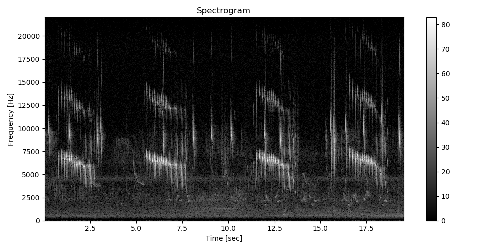

Note
Click here to download the full example code
Simple audio segmentation¶
In audio signals, regions of interest are usually regions with high density of energy. The function ``find_rois_cwt` allows finding regions of interest in the signal giving very simple and intuitive parameters: temporal length and frequency limits. This segmentation can be seen as a coarse detection process, the starting point of more advanced classification methods.
The following sound example as two main different soundtypes in the foreground:
A bouncy trill between 4.5 and 8 kHz lasting approximately 2 seconds
A fast descending chirp between 8 and 12 kHz lasting 0.1 approximately seconds
Load audio file¶
Load an audio file and compute the spectrogram for visualization.
Detect the bouncy trill¶
The accelerating trill is the song of a small neotropical bird, the Red-faced Spinetail Cranioleuca erythrops. This song can be detected on the recording using the function find_rois_cwt and setting frequency limits flims=(4500,8000) and temporal length of signal tlen=2. The segmentation results are returned as a dataframe with temporal segmentation given by the function and using the frequency limits defined by the user.
df_trill = find_rois_cwt(s, fs, flims=(4500,8000), tlen=2, th=0, display=True, figsize=(10,6))
print(df_trill)
Out:
min_f min_t max_f max_t
0 4500.0 0.74304 8000.0 2.50776
1 4500.0 5.10839 8000.0 7.33751
2 4500.0 11.23846 8000.0 13.37469
3 4500.0 16.16109 8000.0 18.29732
Detect the fast descending chirp¶
Alternatively, the fast descending chirp (unknown species) can be segmented in the recording by changing the detection parameters, flims and tlen.
df_chirp = find_rois_cwt(s, fs, flims=(8000,12000), tlen=0.1, th=0.001, display=True, figsize=(10,6))
print(df_chirp)

Out:
min_f min_t max_f max_t
0 8000.0 0.18576 12000.0 0.26993
1 8000.0 1.30612 12000.0 1.39900
2 8000.0 2.83574 12000.0 2.91701
3 8000.0 3.02730 12000.0 3.10857
4 8000.0 6.40871 12000.0 6.49288
5 8000.0 8.05152 12000.0 8.14150
6 8000.0 9.04417 12000.0 9.12544
7 8000.0 10.11519 12000.0 10.20517
8 8000.0 11.90023 12000.0 11.99601
9 8000.0 12.75356 12000.0 12.84934
10 8000.0 15.50222 12000.0 15.59220
11 8000.0 15.68508 12000.0 15.77215
12 8000.0 16.31202 12000.0 16.40490
13 8000.0 17.29016 12000.0 17.38014
14 8000.0 18.27701 12000.0 18.37279
15 8000.0 19.22032 12000.0 19.31610
Total running time of the script: ( 0 minutes 1.102 seconds)